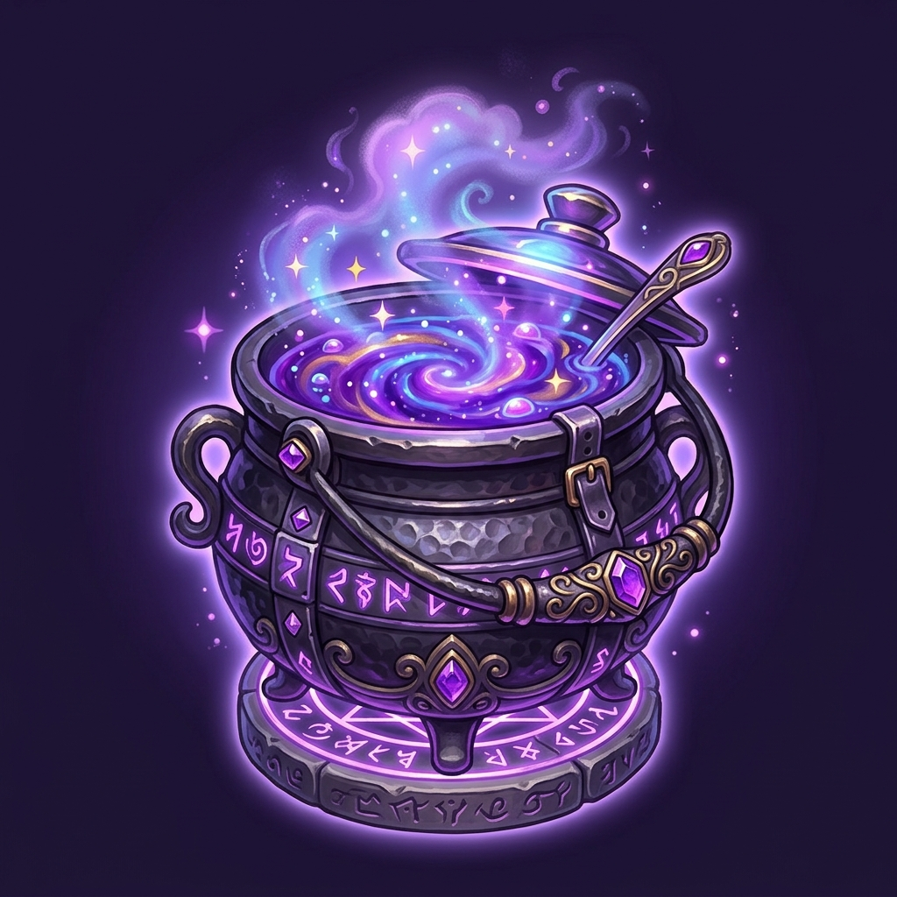

Exam Composition Overview
Take a look at the breakdown of the June 2025 Economics exam. This dashboard shows the structure of all 100 questions, helping you plan your study sessions before jumping into the interactive question bank.
📜
Questions Analyzed
100
Questions (Q.51 - Q.150)

🔥Top Subject Area
Calculating...
Highest weightage
🌌
Complexity Level
Advanced
High theoretical focus
Topic Distribution
Observe how different subjects are weighted in the exam. Notice the focus on macro policy and quantitative questions.
Key Concepts
The exam heavily assesses foundational models and recent economic surveys. Keep these key concepts at the forefront of your mind.
⚔️
Nash Equilibrium
Game Theory
⚖️
Coase Theorem
Externality
📉
IS-LM Model
Macro Policy
🇮🇳
Union Budget
Indian Econ